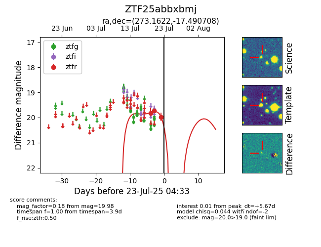

Target ZTF25abbxbmj at 2025-07-23 12:37, see:
FINK: fink-portal.org/ZTF25abbxbmj
Lasair: lasair-ztf.lsst.ac.uk/objects/ZTF25abbxbmj
ALeRCE: alerce.online/object/ZTF25abbxbmj
alt names
ZTF25abbxbmj (ztf,fink)
coordinates:
equatorial (ra, dec) = (273.1622,-17.49071)
galactic (l, b) = (13.0094,+0.34002)
photometry
last ztfr=19.98
3 ztfr detections
